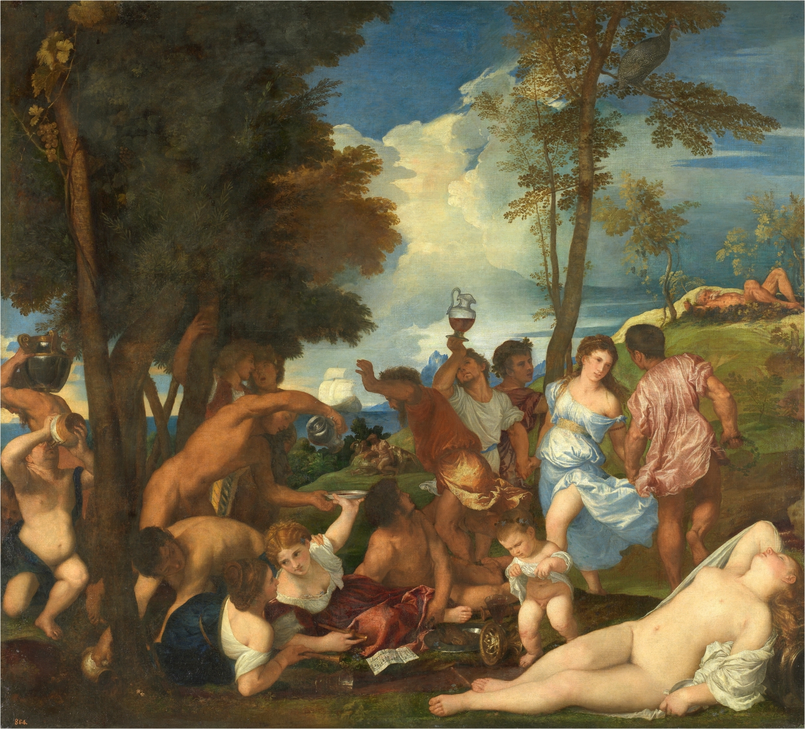

LA BACANAL DE LOS ANDRIOS
EN YOUTUBE

Usá auriculares para una mejor experiencia.
21 de Febrero de 2022
 8 Min
8 Min
Video/Música
La bacanal de los andrios es una descripción del cuadro de Tiziano del mismo nombre que pintó entre 1523 y 1526 en óleo sobre lienzo. El cuadro está expuesto en el Museo del Prado en Madrid.
Tiziano pintó La bacanal de los Andrios inspirándose en Filostrato. La escena transcurre en la isla de Andros, tan favorecida por Baco que el vino manaba de un arroyo. Dioses, hombres y niños se unen en la celebración de los efectos del vino, cuyo consumo, en palabras de Filostrato, hace a los hombres ricos, dominantes en la asamblea, dadivosos con los amigos, guapos y de cuatro codos de altura. Redunda en esa idea la partitura en primer plano: el canon "Chi boyt et ne reboyt il ne seet que boyre soit" (Quien bebe y no repite no sabe lo que es beber), atribuido a Adriaen Willaert (hacia 1480-1567), músico flamenco al servicio de la corte ferraresa.
A Tiziano le interesó más el sentido que la literalidad de la narración, permitiéndose ciertas libertades. La principal fue excluir a Baco y sus seguidores, supuestamente confinados al barco que se aleja y cuya no inclusión justificaba Panofsky por estar reservada su teofanía a Baco y Ariadna, del mismo modo que la reducción de los numerosos niños a los que alude el texto a uno sólo probablemente responda a su abundancia en La ofrenda a Venus. Tiziano se permitió asimismo aludir a otros temas como Las tres edades del hombre e incluyó personajes no citados por Filostrato pero apropiados a un contexto báquico, como la ninfa dormida en el ángulo inferior derecho o el niño orinando (representación de la risa), y a otros con indumentarias contemporáneas. Estas libertades han generado problemas a la hora de identificar algún personaje, sobre todo al anciano que yace exhausto al fondo, probable personificación del dios del río tal como lo describe Filostrato. El personaje más atractivo de la composición es la ninfa del ángulo inferior derecho, espléndido desnudo femenino donde Tiziano combinó magistralmente vulnerabilidad, sensualidad y un abierto ofrecimiento al espectador. Aunque debe desecharse su identificación con Ariadna, cuyo abandono tuvo lugar en Naxos y no en Andros, su actitud, independientemente de sus fuentes formales, remite a otro pasaje de las Imágenes: "Fíjate también en Ariadna, observa cómo duerme: desnuda de cintura para arriba, la nuca hacia atrás deja ver su suave cuello, la axila derecha completamente a la vista mientras que la otra mano se esconde bajo la túnica".
Tiziano acudió a fuentes clásicas y contemporáneas. Así, la figura masculina reclinada en el centro deriva de la Batalla de Cascina de Miguel Ángel, mientras que para el espléndido desnudo femenino en el ángulo inferior derecho se invocan la Ariadna, entonces llamada Cleopatra, del Vaticano y, más probablemente, un sarcófago romano conocido y reproducido por artistas del norte de Italia desde el siglo XV. Otras figuras remiten igualmente a la estatuaria clásica: la ménade vestida de blanco a un torso antiguo en la colección Grimani (el parecido es más evidente en la radiografía, donde la torsión del cuello es idéntica), mientras la mujer con atuendo contemporáneo tumbada en primer plano probablemente derive de un relieve funerario que entró en la colección Farnese en 1548. También el niño orinando era un motivo habitual en sepulcros antiguos. Finalmente, el personaje masculino desnudo que escancia vino a la izquierda parece una reelaboración del Persa o Galo herido, escultura helenística hallada en Roma en 1514-15, conocida por Tiziano probablemente por un dibujo y de la que ya se había servido para el San Juan Bautista del Bautismo de Cristo (Roma, Capitolina). Pero la frescura de muchas de sus figuras delata su estudio del natural. El 14 de abril de 1522 el agente de Alfonso d`Este en Venecia le comunicaba que Tiziano no quería abandonar la ciudad y acudir a Ferrara por tener allí meretrices y hombres que le servían de modelos para los desnudos, y aunque las fechas coincidan con la realización de Baco y Ariadna, parece lógico pensar que seguiría con dicha práctica después.

Azar Rock